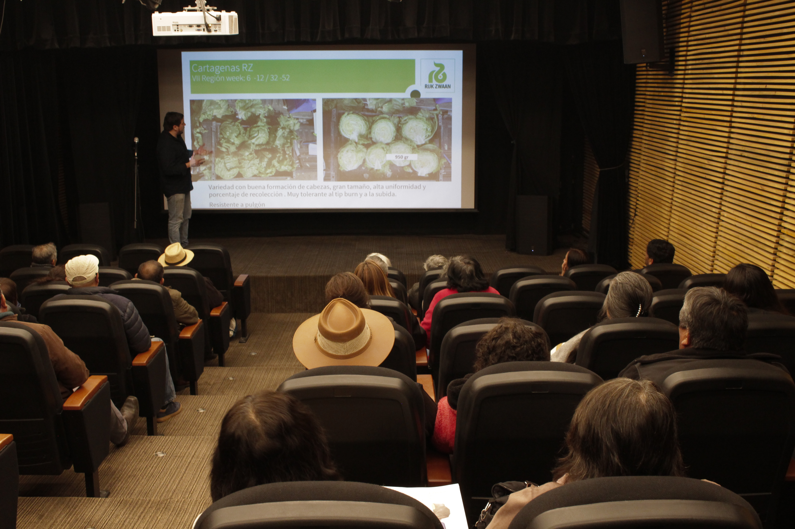
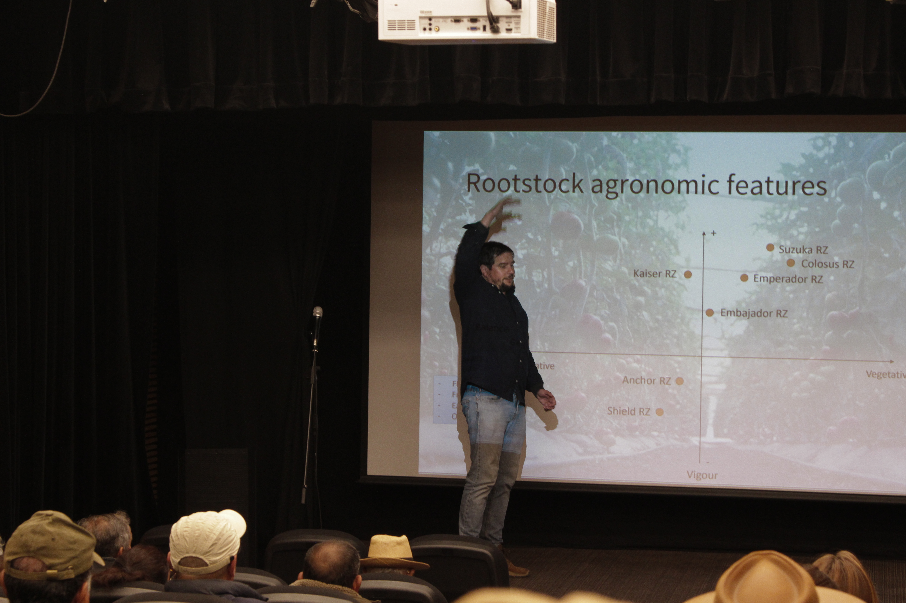
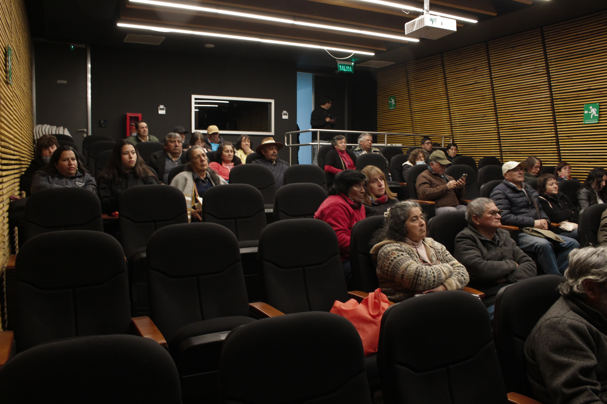
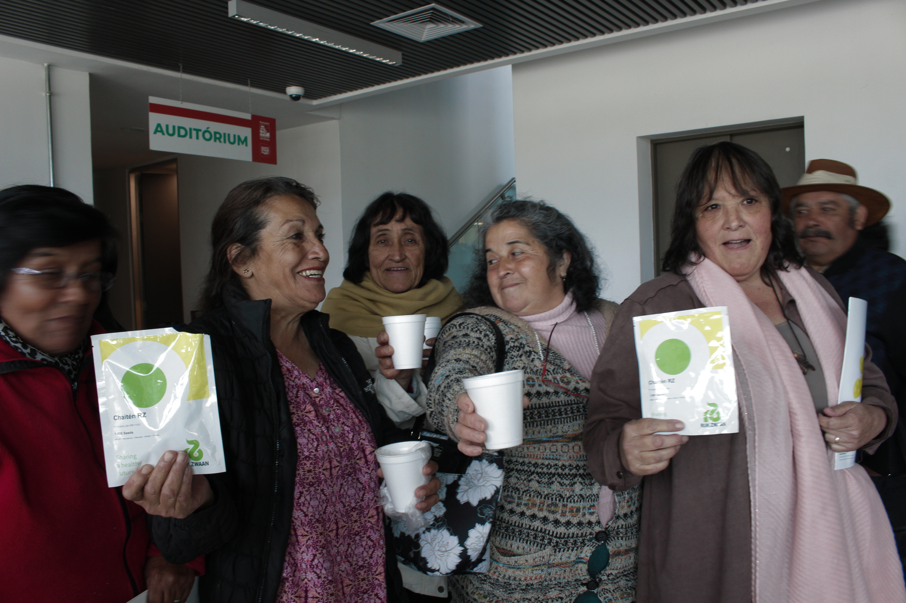
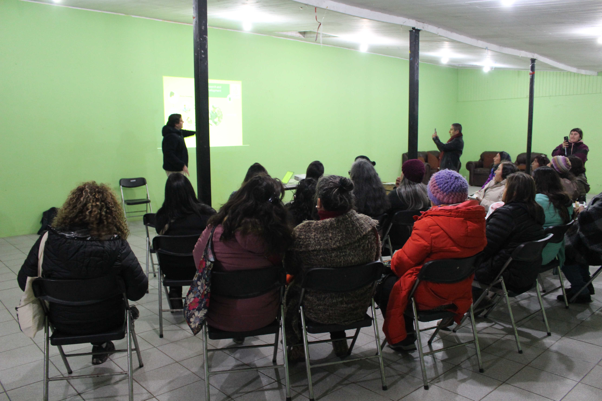
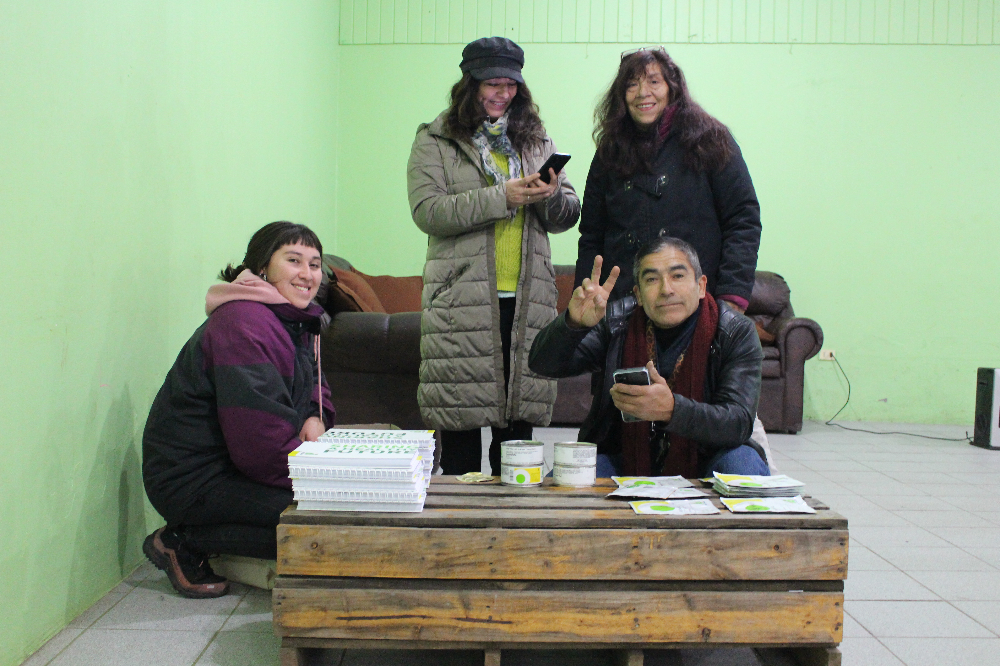

Una iniciativa orientada al autocultivo, la alimentación saludable, la participación comunitaria y el cuidado del medioambiente.
El Ciclo de Talleres de Cultivo Sustentable es una iniciativa orientada al autocultivo, la alimentación saludable, la participación comunitaria y el cuidado del medioambiente.
A través de los talleres se busca promover el aprendizaje y la participación, entregando herramientas y conocimientos que permitan fortalecer prácticas de cultivo sustentable y el vínculo de las comunidades con su entorno.





